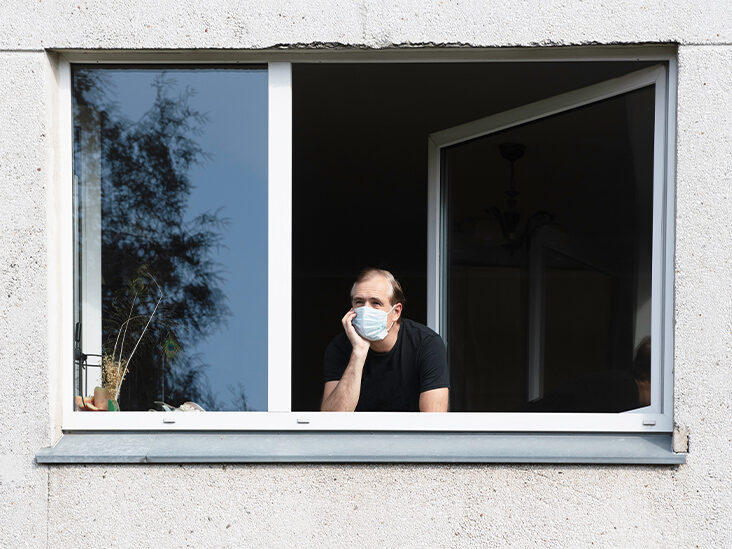
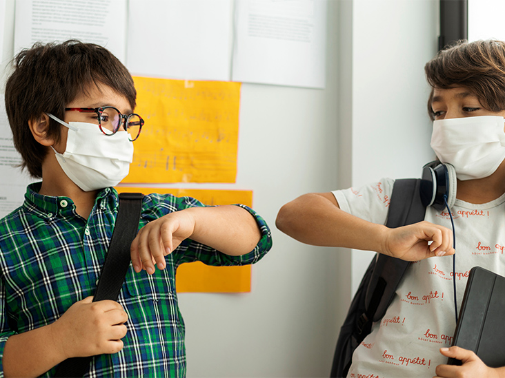
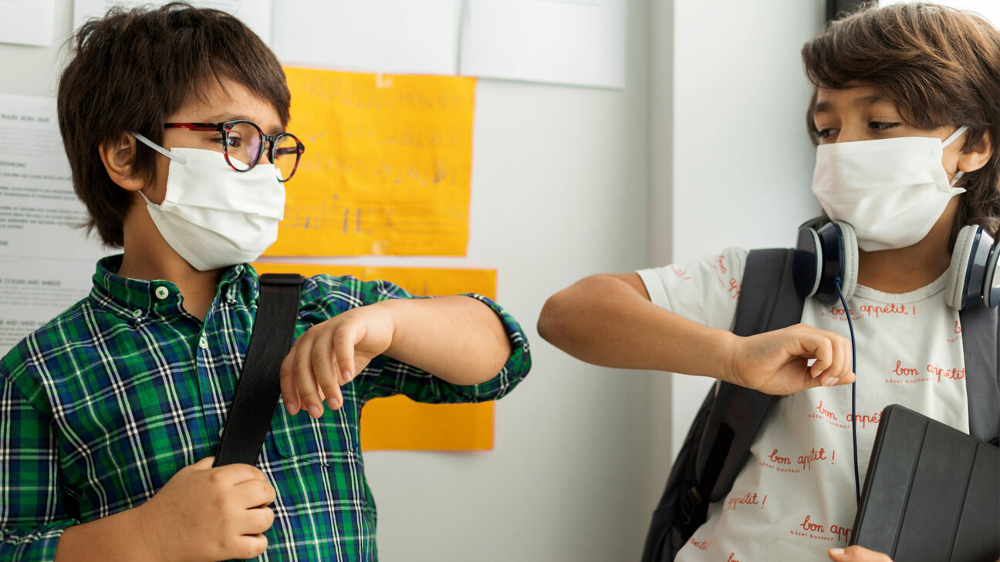
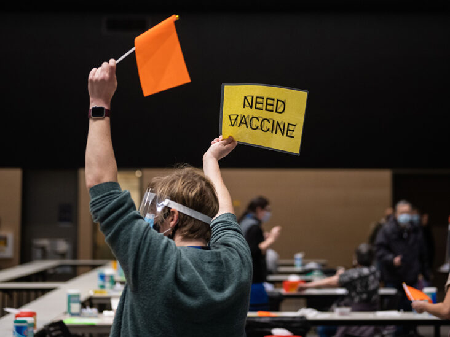
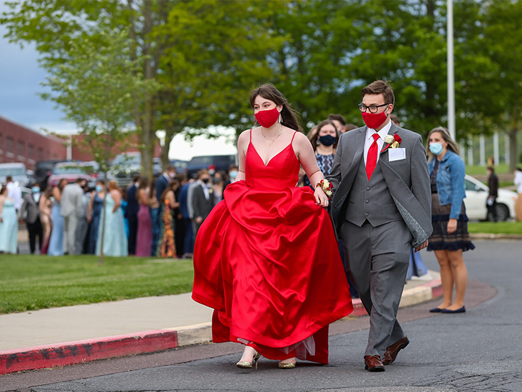
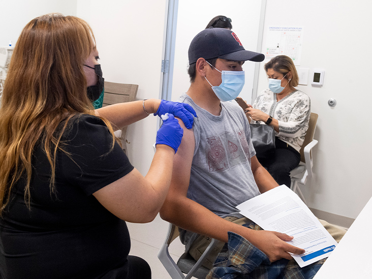
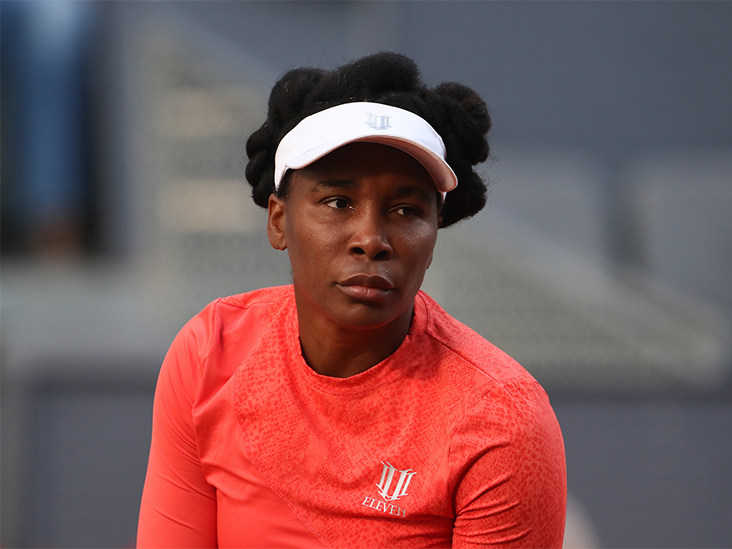
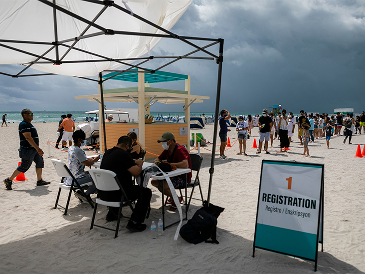
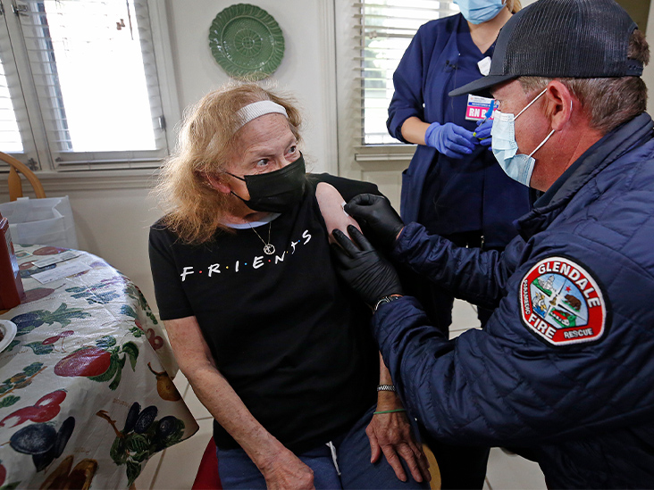
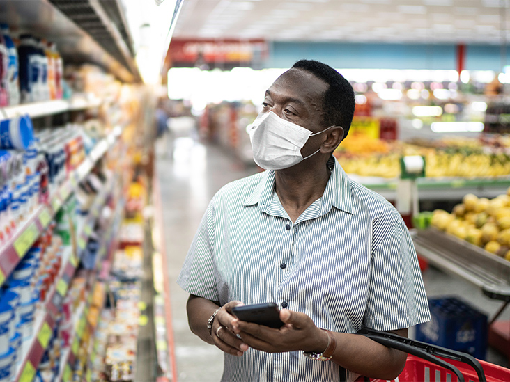

Should Schools Be Reopening?New Study Says Yes

The Centers for Disease Control and Prevention (CDC) has released guidance on how schools can reopen safely.Though initially thought to be a major spreader of disease, children are unlikely to widely spread the virus, research finds.
A new study now concludes that school closures did not have a major impact on slowing the pandemic.Instead, people’s voluntary behavioral changes made a bigger impact.
A study published this month in the Journal of the American Medical Association Pediatricssays that although school closures in the spring of 2020 were reasonable, they may not have played as great of a role in slowing the spread of the new coronavirus as originally thought.
In the new study from the University of California Los Angeles led by Frederick Zimmerman, PhD, authors found evidence that there is not a current need to keep schools closed.
'Keeping schools closed in the spring turns out to have been unnecessary in hindsight, but definitely the right thing to do given what we knew at the time,' Zimmerman told Healthline.
According to the study authors, multiple previous studies have shown that there is little or no association between school closures and decreased rates of COVID-19.
And in those studies, researchers did not assess how school closures compared to voluntary behavioral changes.These changes include working from home, decreasing dining out, staying at home, and avoiding large gatherings.
This study found that voluntary behavioral changes had a 3-times stronger reduction in the incidence and mortality of COVID-19 than school closures, although school closures did affect as well.
Zimmerman says that with limited data last spring, closing schools made sense.However, multiple studies have shown that transmission of the virus in young children, even to adults, may not have been as strong as initially theorized.
Dr. Timothy Sullivan, chair of psychiatry and behavioral sciences at Staten Island University Hospital in New York City, dug deep into the data, which he called 'intriguing.'
The researchers used aggregate data from smartphones and looked at school closures and other measures to see if schools had a major effect on the spread of the coronavirus.They also looked to see if behavior played a bigger factor.
'The findings are also intriguing: Contrary to some of the social hype — encouraged by recent CDC recommendations — the study suggests that school closures did reduce mortality due to COVID-19,' Sullivan told Healthline.'The data also suggests, however, that the net effect of school closures is less pronounced than that caused by other behavioral change.'
Study authors found that the academic costs of school closures in the United States in the spring of 2020 have been about $2 trillion and have been a burden on those who have the least resources.
'There has been mixed response by the public and government regarding school closures.This is probably one of the most debated topics with regards to the pandemic,' said Brittany LeMonda, PhD, senior neuropsychologist at Lenox Hill Hospital in New York City.
Though local governments implemented some regulations that led to business closings and enforced social distancing to ensure public safety and reduce the burden of COVID-19, many voluntary personal behavioral changes have also helped.
'Many of the behaviors that helped curb the spread of the virus were actually done on individuals’ own accord and without government guidance or the implementation of new policies,' LeMonda told Healthline.
We’ll email you the latest developments about the novel coronavirus and Healthline's top health news stories, daily.
Experts know that keeping children out of school can affect their mental health and their education, but the long-term effects of remote and distance learning on both scholastic and social measures have not been fully understood.
Students are beginning to feel the effects of social isolation by showing signs of anxiety and depression.And many parents are exhausted as they help their children with virtual learning.
The study’s researchers say that many teens have since dropped out of high school or decided not to go to college, and while some of these students may go back to school, many will not.
Zimmerman worries that there may be a 'lack of public response — or even sympathy — for these kids and young adults.'
While much has been done to help the economy recover, experts believe that we need to begin to look at the education system.
'There has been a huge medical response to COVID, and politicians have stepped up to protect the economy, which will bounce back rapidly once herd immunity is achieved,' Zimmerman said.'But a kid who decides to drop out of school — that is a whole life changed.And there just hasn’t been any response to the educational problems.None.'
Sullivan says that while there is an assumption of adverse effects on children’s health, it is only theoretical at this point.
'The authors repeat the assumption that school closure has a deleterious effect on children’s health –— an assertion that may have commonsense validity, but for which it is impossible to comment on scientifically,' Sullivan said.
Zimmerman explained that the fallout from the pandemic will likely last long after the virus has receded.
'We are only now starting to put our arms around the tragedy of COVID.The many lives lost directly to COVID are the most obvious consequence, but as time goes on, researchers will start to identify the many other ways in which lives have been shattered,' said Zimmerman.
Posted On: 2021-02-24T00:00:00
Posted By: Rajiv Bahl









Content Date: 2021-02-24
Download Date: 2021-05-13
Document ID: L0C04BZSI